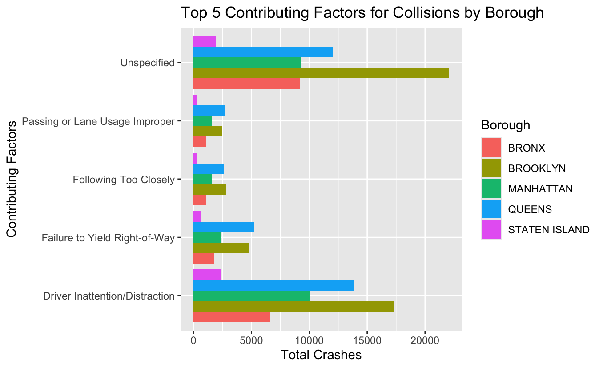
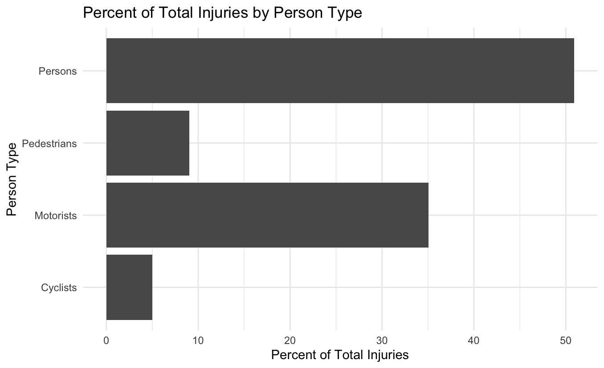
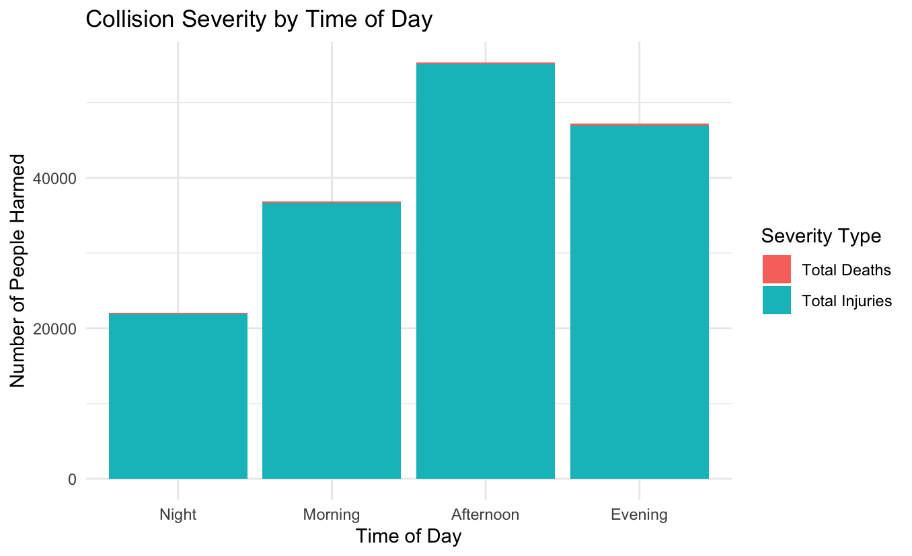

The dataset that will be used for the analysis is from the NYC Open Data site. This dataset was provided by the New York Police Department (NYPD) and contains records of all police reported motor vehicle collisions in New York City. Each row in the dataset represents one collision event with attributes such as date and time, location, numbers of people injured or killed, contributing factors, vehicle types, and a unique collision ID. The data was filtered to recent years from 2023 to 2026 and then analyzed.
It is important to keep in mind that this data has been collected by the police department. Thus, there are many incomplete and missing fields in the dataset due to how officers filled out the report. In addition these police reports are only filed if there is a collision involving injury, death, or damages over $1,000. Thus, minor collisions are not reported as often and this dataset does not account for population density, demographic factors, and traffic.
To begin, six variables in the dataset were analyzed:
| Min | 1st Qu. | Median | Mean | 3rd Qu. | Max |
|---|---|---|---|---|---|
| 0.000000 | 0.000000 | 0.000000 | 0.002801 | 0.000000 | 5.000000 |
| Min | 1st Qu. | Median | Mean | 3rd Qu. | Max |
|---|---|---|---|---|---|
| 0.0000 | 0.0000 | 0.0000 | 0.5764 | 1.0000 | 34.0000 |
| January | February | March | April | May | June | July | August | September | October | November | December |
|---|---|---|---|---|---|---|---|---|---|---|---|
| 25843 | 20728 | 23071 | 21851 | 24823 | 23641 | 23145 | 22640 | 23671 | 24044 | 22369 | 22970 |
| Night | Morning | Afternoon | Evening |
|---|---|---|---|
| 40875 | 71065 | 94218 | 72638 |
| Bronx | Brooklyn | Manhattan | Queens | Staten Island | NA |
|---|---|---|---|---|---|
| 31537 | 71622 | 37715 | 54637 | 8397 | 74888 |
| Unspecified | Driver Inattention/Distraction | Failure to Yield Right-of-Way | Following Too Closely | Passing or Lane Usage Improper | Unsafe Speed | Other Vehicular | Passing Too Closely |
|---|---|---|---|---|---|---|---|
| 69256 | 68327 | 18940 | 16479 | 11561 | 10161 | 9200 | 9104 |
| Backing Unsafely | Traffic Control Disregarded | Turning Improperly | Driver Inexperience | Unsafe Lane Changing | Alcohol Involvement | Pedestrian/Bicyclist/Other Pedestrian Error/Confusion | Reaction to Uninvolved Vehicle |
| 8377 | 7754 | 6473 | 6177 | 5631 | 5273 | 3278 | 3056 |
| View Obstructed/Limited | Aggressive Driving/Road Rage | Pavement Slippery | Fell Asleep | Oversized Vehicle | Brakes Defective | Passenger Distraction | Outside Car Distraction |
| 2667 | 2478 | 2047 | 1202 | 1075 | 1016 | 818 | 645 |
| Steering Failure | Obstruction/Debris | Lost Consciousness | Illnes | Glare | Tire Failure/Inadequate | Driverless/Runaway Vehicle | Failure to Keep Right |
| 602 | 595 | 594 | 495 | 446 | 437 | 301 | 291 |
| Pavement Defective | Fatigued/Drowsy | Animals Action | Accelerator Defective | Drugs (illegal) | Cell Phone (hand-Held) | Lane Marking Improper/Inadequate | Traffic Control Device Improper/Non-Working |
| 288 | 285 | 222 | 199 | 184 | 123 | 118 | 117 |
| Physical Disability | Tinted Windows | Tow Hitch Defective | Prescription Medication | Vehicle Vandalism | Eating or Drinking | Headlights Defective | Other Lighting Defects |
| 104 | 64 | 40 | 38 | 37 | 35 | 29 | 29 |
| Using On Board Navigation Device | Other Electronic Device | Cell Phone (hands-free) | Shoulders Defective/Improper | Windshield Inadequate | Texting | Listening/Using Headphones | |
| 23 | 22 | 20 | 15 | 13 | 10 | 4 |
To further explore the dataset, the top five contributing factors were aggregated, compared to total crashes, and looked at for each borough. From the plot we see that across the boroughs the factor for a lot of collisions is unreported and the second most is driving distracted. We also see that Brooklyn and Queens tend to have more total crashes whereas the other boroughs have a lot less.

To understand the distribution of those that are injured in collisions, the data was aggregated by each type of person (person, cyclist etc.). From the plot we see that the most injured is "Persons" with over 50% of total injuries, followed by motorists with 35% of injuries. Persons is a broad term for people injured again showcasing the lack of specifity and information when reported.

To find the most common time of day for crashes, the data was aggregated to find the total deaths and injuries and the total number of people hurt in each time frame of the day. From the plot we see that the afternoon and evening have the most collisions compared to morning and night. As for severity, for all of the times of day most of these collisions result in injuries and very few result in death.

Finally, after analyzing the variables and visualizations here are 3 testable hypotheses:
The contributing factor variable showed that after "Unspecified" driver inattention had the highest count with 68,327. As well as, the top factors across the boroughs plot showed that driver inattention is the highest across the boroughs as well.
The borough distribution showed that Brooklyn with 71,622 total collisions and Queens with 54,637 collisions have the highest. The top factor plot also showed that even across all the factors Brooklyn and Queens tended to lead in collisions.
The time-of-day variable, the summary shows that the afternoon had the highest number of collisions with 94,218. In the collision severity plot we can see that this is reiterated with the afternoon having the highest sum.